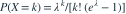
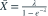
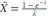
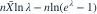
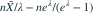

样本来自  的 MLE 应解哪个方程？
的 MLE 应解哪个方程？

，。若 ， 的 MLE 应解哪个方程？- A

- B
- C
- D

我已思考，展开答案与解析
正确答案：A
- 对数似然的参数部分为

。 - 求导为

，令其为 0 得所列方程。
易错提醒零截断后的归一化项依赖参数，不能在似然求导时删掉。
资料校订：回忆稿表述 MLE 存在且唯一时未列样本限制；本题明确补充样本均值大于 1，排除开参数空间的边界例外。
JYSG · 432精选 · 册内清华大学432·2025年·2(3)；PDF第117页（印刷页115）
原大题拆解